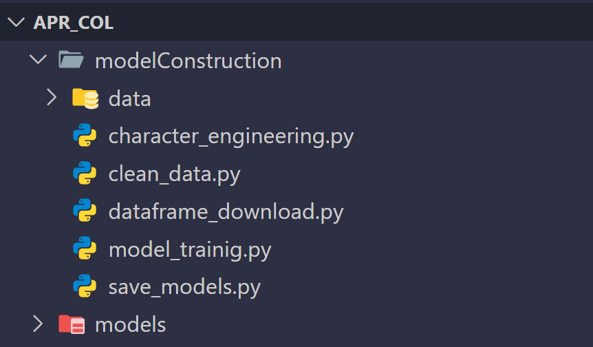

Construcción
APR-Col esta completamente construido con Python por lo cual no tendras que luchar con otros lenguajes de programación al modificar o contribuir a este proyecto, se debe tener en cuenta que para el desarrollo de este proyecto se utilizo python 3.13.5 y se hizo uso de las siguientes librerias
# Librerias
scikit-learn==1.3.2
xgboost==2.0.3
PyQt6==6.6.1
numpy==1.26.4
pandas==2.3.1
category_encoders==2.8.1
Si deseas consultar mas sobre base de datos utilizada para el entrenamiento del modelo sigue el siguientes enlace:
Desarrollo
Para empezar a desarrollar o contribuir a APR-Col, primero debes tener instalado Python 3.13.5 en tu sistema y un IDLE de tu preferencia. Luego, clona el repositorio de GitHub y asegúrate de instalar las respectivas dependencias utilizando el archivo requirements.txt proporcionado. Puedes hacer este proceso por la linea de comandos con los siguientes comandos:
# Clonar el repositorio
git clone https://github.com/AlejandroJIMBUI/APR-Col.git
# instalar dependencias
pip install -r requirements.txt
Es recomendable que uses un entorno virtual para evitar conflictos con otras dependencias de tu sistema.
# crear un entorno virtual
python -m venv venv
# En Windows
venv\Scripts\activate
# En macOS/Linux
source venv/bin/activate
Una vez que hayas configurado todo pon atención a los siguientes directorios:
El directorio "modelConstruction" contiene la construcción completa del modelo de predicción, incluyendo el entrenamiento y la validación.
El directorio "data" contiene el archivo resultante al ejecutar "dataframe_downloader.py", que es el archivo CSV con los datos de entrenamiento.
El directorio "models" contiene los modelos entrenados en "save_models.py".